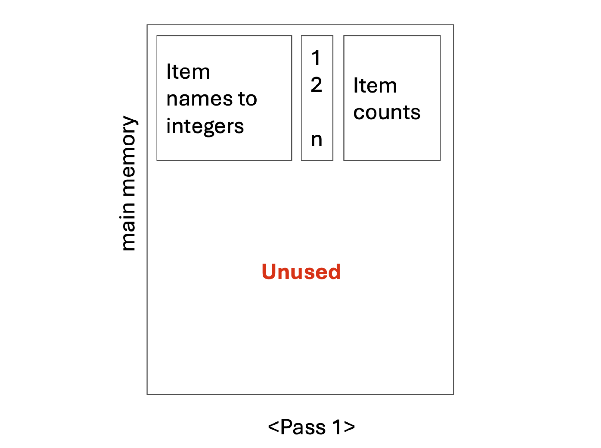
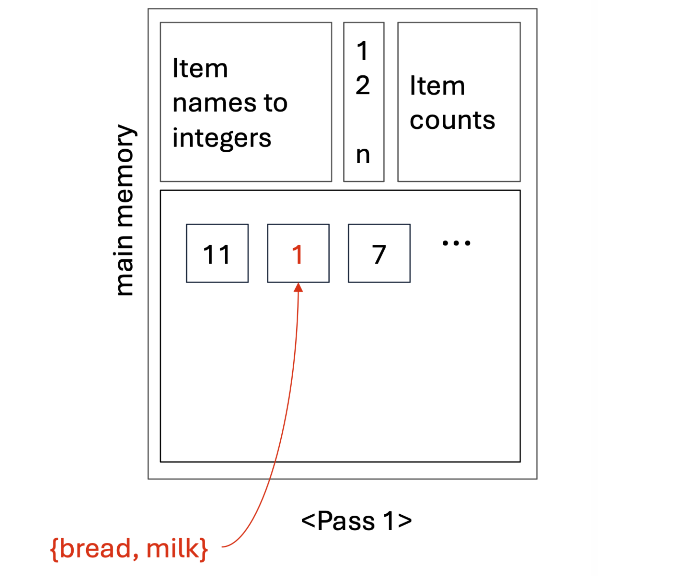
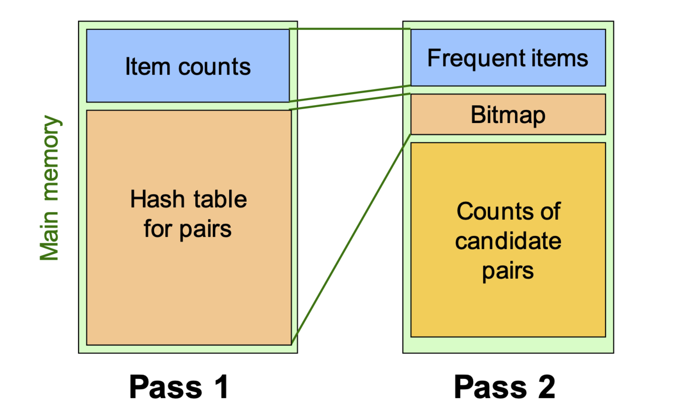

1. Introduction: 메모리 한계와 새로운 접근
데이터 마이닝에서 빈발 항목 집합(Frequent Itemsets)을 찾는 것은 연관 규칙 학습의 핵심입니다. 앞서 다루었던 기본적인 A-Priori 알고리즘은 후보 크기가 작은 경우에는 훌륭하게 작동하지만, 치명적인 전제 조건이 있습니다. 바로 후보 쌍(Candidate pairs) 집합인 \(C_2\)를 카운팅하는 작업이 반드시 메인 메모리(Main Memory) 내에서 이루어져야 한다는 점입니다.
만약 분석해야 할 데이터의 차원이 매우 커서 메모리가 부족해진다면 어떻게 해야 할까요? 이러한 한계를 극복하기 위해서는 생성되는 \(C_2\)의 크기 자체를 사전에 효과적으로 줄여주는 알고리즘이 필수적입니다. 대표적인 확장 알고리즘으로는 다음 세 가지가 있습니다.
- PCY (Park-Chen-Yu) Algorithm
- Multistage Algorithm
- Multihash Algorithm
본 포스트에서는 A-Priori의 메모리 비효율성을 개선한 PCY 알고리즘의 수학적 원리와 논리적 흐름을 상세히 다룹니다.
2. PCY 알고리즘의 핵심 아이디어 (Motivation)
PCY 알고리즘의 출발점은 A-Priori 알고리즘의 첫 번째 패스(Pass 1)에서 발생하는 메모리의 낭비를 관찰하는 것에서 시작됩니다.
A-Priori의 Pass 1에서는 개별 아이템(Item)을 정수로 매핑(Item names to integers)하고, 각 개별 아이템의 빈도수(Item counts)만을 세어 메모리에 저장합니다. 이 과정에서 메인 메모리의 상당 부분은 사용되지 않고 유휴(Idle) 상태로 남게 됩니다. PCY 알고리즘은 모든 아이템 쌍을 메모리에 직접 저장할 수 없다는 점을 인지하고, 이 “비어있는 메모리 공간”을 Pass 2를 위해 미리 활용하는 전략을 취합니다.

3. 알고리즘의 작동 원리 (Mechanism)
3.1. Pass 1: 해시 테이블의 생성과 카운팅
- PCY 알고리즘은 Pass 1 데이터를 스캔할 때, 단일 아이템의 빈도를 세는 동시에 아이템 쌍(Pairs)에 대한 해시 테이블(Hash table)을 유휴 메모리에 생성합니다.
- 버킷 할당: 사용 가능한 메모리 크기에 맞춰 최대한 많은 수의 버킷(Bucket)을 만듭니다. 예를 들어, 4KB의 여유 메모리가 있다면 약 1,000개의 버킷을 할당할 수 있습니다.
- 해싱 작업: 장바구니 데이터를 스캔하면서 발생하는 모든 아이템 쌍 \(\{i, j\}\)에 대해 해시 함수를 적용하고, 해당 쌍이 매핑되는 버킷의 카운트를 1 증가시킵니다.
- 충돌(Collision)의 수용: 고유한 아이템 쌍의 전체 개수는 할당된 버킷의 수보다 훨씬 많기 때문에, 서로 다른 쌍이 같은 버킷에 할당되는 해시 충돌은 필연적으로 발생합니다. 이는 알고리즘 구조상 자연스러운 현상입니다.

3.2. 버킷 관찰과 논리적 추론 (Observations)
- 해시 테이블을 만드는 이유는 단 하나, 빈발할 가능성이 전혀 없는 쌍(infrequent pairs)을 사전에 제거하기 위해서입니다.
- 특정 버킷 \(B\)의 카운트는 그 버킷으로 해싱된 “모든” 아이템 쌍의 출현 횟수 총합입니다.
- 만약 버킷 \(B\)의 총 카운트가 우리가 설정한 지지도 임계값(Support threshold) \(s\) 이상이라면, 해당 버킷에 속한 쌍들 중 일부는 빈발 항목 집합일 가능성이 있습니다.
- 결정적 논리: 반대로, 버킷 \(B\)의 총 카운트가 \(s\) 미만이라면, 그 버킷으로 해싱된 그 어떤 아이템 쌍도 절대 지지도 \(s\)를 넘을 수 없습니다.
3.3. Between Passes: 비트맵(Bitmap) 압축
- Pass 1이 끝나고 Pass 2로 넘어가기 전, 메모리 효율을 극대화하기 위해 기존의 정수형 해시 테이블을 비트 벡터(Bit-vector)로 변환합니다.
- 버킷의 카운트 \(\ge s\) 이면, 해당 버킷의 비트를
1로 기록합니다. - 버킷의 카운트 \(< s\) 이면, 해당 버킷의 비트를
0으로 기록합니다.
- 버킷의 카운트 \(\ge s\) 이면, 해당 버킷의 비트를
- 일반적으로 정수형 데이터 하나가 32비트를 차지하므로, 이를 1비트의 참/거짓(1/0) 정보로 압축하면 해시 테이블이 차지하던 메모리 공간을 \(\frac{1}{32}\) 수준으로 대폭 축소할 수 있습니다.
3.4. Pass 2: 후보 쌍 \(C_2\)의 정의
- 비트맵 압축으로 확보한 메모리 공간을 활용하여 Pass 2에서는 후보 쌍을 카운팅합니다. PCY 알고리즘에서 특정 쌍 \(\{i, j\}\)가 최종 후보 쌍 집합 \(C_2\)에 포함되기 위해서는 두 가지 조건을 모두 만족해야 합니다. 이것이 A-Priori와의 가장 큰 차이점입니다.
- \(i\)와 \(j\)가 모두 빈발 아이템(Frequent items)이어야 합니다.
- 쌍 \(\{i, j\}\)를 해싱했을 때 도달하는 버킷의 비트값이
1(Frequent bucket)이어야 합니다.
- 쌍 \(\{i, j\}\)를 해싱했을 때 도달하는 버킷의 비트값이

3.5. 구조적 특징 (Subtlety): Triples Method의 강제성
아이템 쌍을 카운팅할 때, 일반적인 알고리즘들은 삼각 행렬(Triangular-matrix) 구조를 사용하여 공간을 절약합니다. 그러나 PCY 알고리즘은 삼각 행렬 방식을 사용할 수 없습니다.
그 이유는 PCY가 후보 쌍 집합 \(C_2\)의 희소성(Sparsity)을 극대화하여 비빈발 쌍을 제거하기 때문입니다. 연속적인 메모리 할당이 필요한 삼각 행렬에서, 중간에 이빨이 빠진 것처럼 비빈발 쌍을 제거하여 “압축(compact)”하는 것은 구조적으로 불가능합니다. 따라서 PCY는 항상
[아이템1, 아이템2, 카운트]형태의 Triples method를 강제적으로 사용해야 합니다.
4. 실전 예제 (Pop Quiz Step-by-Step)
- 강의에서 제시된 퀴즈를 통해 PCY의 논리적 흐름을 완벽히 이해해 봅시다.
[문제 상황]
- 전체 장바구니 집합 (Baskets): \(\{1,2,3\}, \{3,4,5\}, \{2,4,5\}\)
- 지지도 임계값 (Support threshold): \(s = 2\)
- Pass 1에서 사용하는 버킷 수: 3개
- 해시 함수: \(h(i, j) = (i \times j) \pmod 3\)
Q: PCY의 Pass 2에서 실제로 카운팅되는 후보 쌍은 무엇인가요?
[단계별 풀이]
Step 1: 개별 아이템 카운팅 (Pass 1)
- 각 장바구니를 스캔하여 개별 아이템의 빈도를 계산합니다.
- Item 1: 1번
- Item 2: 2번
- Item 3: 2번
- Item 4: 2번
- Item 5: 2번
- 임계값 \(s=2\)이므로, 빈발 아이템(Frequent Items)은 \(\{2, 3, 4, 5\}\) 입니다. (Item 1은 탈락)
Step 2: 해시 버킷 카운팅 (Pass 1)
- 각 장바구니에서 발생 가능한 모든 쌍에 대해 해시 값을 계산하고 버킷 카운트를 늘립니다.
- Basket 1 \(\{1,2,3\}\):
- \(\{1,2\} \rightarrow (1\times2) \bmod 3 = 2\)
- \(\{1,3\} \rightarrow (1\times3) \bmod 3 = 0\)
- \(\{2,3\} \rightarrow (2\times3) \bmod 3 = 0\)
- Basket 2 \(\{3,4,5\}\):
- \(\{3,4\} \rightarrow (3\times4) \bmod 3 = 0\)
- \(\{3,5\} \rightarrow (3\times5) \bmod 3 = 0\)
- \(\{4,5\} \rightarrow (4\times5) \bmod 3 = 2\)
- Basket 3 \(\{2,4,5\}\):
- \(\{2,4\} \rightarrow (2\times4) \bmod 3 = 2\)
- \(\{2,5\} \rightarrow (2\times5) \bmod 3 = 1\)
- \(\{4,5\} \rightarrow (4\times5) \bmod 3 = 2\)
- Basket 1 \(\{1,2,3\}\):
버킷별 누적 카운트 집계:
- Bucket 0: \(\{1,3\}, \{2,3\}, \{3,4\}, \{3,5\}\) \(\rightarrow\) Count: 4
- Bucket 1: \(\{2,5\}\) \(\rightarrow\) Count: 1
- Bucket 2: \(\{1,2\}, \{4,5\}, \{2,4\}, \{4,5\}\) \(\rightarrow\) Count: 4
Step 3: 비트맵 생성 (Between Passes)
- 임계값 \(s=2\)를 기준으로 버킷을 참/거짓으로 변환합니다.
- Bucket 0 (count=4) \(\ge 2 \rightarrow\) 비트맵
1(Frequent) - Bucket 1 (count=1) \(< 2 \rightarrow\) 비트맵
0(Infrequent) - Bucket 2 (count=4) \(\ge 2 \rightarrow\) 비트맵
1(Frequent)
- Bucket 0 (count=4) \(\ge 2 \rightarrow\) 비트맵
Step 4: Pass 2 후보 쌍 필터링
- \(C_2\)의 조건은 (1) 두 아이템 모두 빈발해야 하며, (2) 해싱된 버킷 비트가
1이어야 합니다. - Step 1에서 구한 빈발 아이템 \(\{2, 3, 4, 5\}\)로 조합 가능한 쌍을 검사합니다.
- \(\{2,3\} \rightarrow\) Bucket 0 (비트 1) \(\rightarrow\) 선택
- \(\{2,4\} \rightarrow\) Bucket 2 (비트 1) \(\rightarrow\) 선택
- \(\{2,5\} \rightarrow\) Bucket 1 (비트 0) \(\rightarrow\) 탈락
- \(\{3,4\} \rightarrow\) Bucket 0 (비트 1) \(\rightarrow\) 선택
- \(\{3,5\} \rightarrow\) Bucket 0 (비트 1) \(\rightarrow\) 선택
- \(\{4,5\} \rightarrow\) Bucket 2 (비트 1) \(\rightarrow\) 선택
[최종 정답]
- 따라서 Pass 2에서 카운팅되는 최종 쌍 집합은 \(\{2,3\}, \{2,4\}, \{3,4\}, \{3,5\}, \{4,5\}\) 입니다. (A-Priori 였다면 \(\{2,5\}\)도 검사했겠지만, PCY는 이를 사전에 효율적으로 걸러냈습니다.)